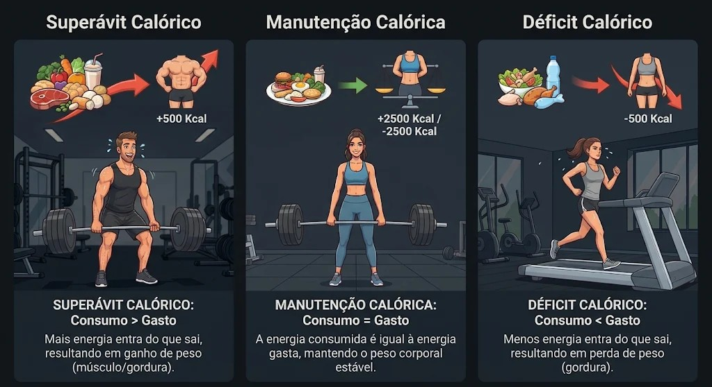
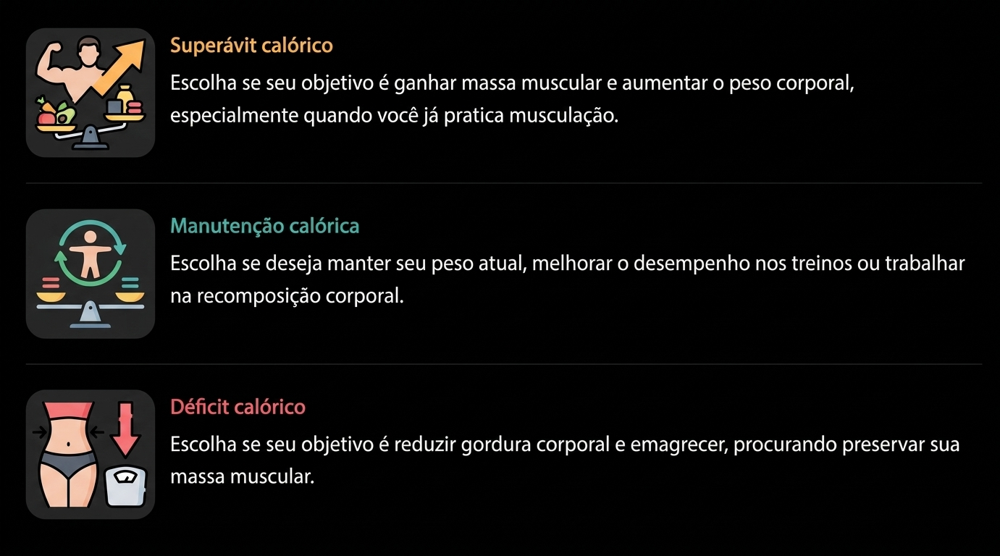

Uma das melhores formas de potencializar os resultados na musculação é combinar uma alimentação equilibrada com o déficit calórico. Essa estratégia ajuda o organismo a utilizar a gordura armazenada como fonte de energia, contribuindo para a redução do percentual de gordura corporal.
Quando associada à prática regular de exercícios físicos, especialmente a musculação, também ajuda a preservar a massa muscular durante o processo de emagrecimento.
Mas o que é Déficit Calórico?
Déficit calórico é quando você consome menos calorias do que seu corpo gasta durante o dia.
Por exemplo: se seu corpo gasta 2.500 calorias por dia e você consome apenas 2.000, existe um déficit de 500 calorias.
Isso faz com que o organismo precise utilizar suas reservas de energia, incluindo a gordura corporal, contribuindo para o emagrecimento.
- Superávit calórico = Consumir mais calorias do que gasta.
- Manutenção calórica = Consumir a mesma quantidade que gasta.
- Déficit calórico = Consumir menos calorias do que gasta.
Resumindo:

Déficit Calórico
O déficit calórico acontece quando uma pessoa consome menos calorias do que seu organismo gasta diariamente. Com essa diferença, o corpo precisa recorrer às suas reservas de energia, contribuindo para a redução da gordura corporal.
Quando associado à musculação e ao consumo adequado de proteínas, o déficit calórico também ajuda a preservar a massa muscular durante o processo de emagrecimento.
Principal objetivo: reduzir a gordura corporal e favorecer a perda de peso.
De acordo com a ISSN, a perda de gordura depende de um déficit energético sustentado, enquanto o treinamento de resistência e a ingestão adequada de proteínas ajudam a preservar a massa magra.
Manutenção Calórica
A manutenção calórica acontece quando a quantidade de calorias consumidas é aproximadamente igual à quantidade de calorias gastas pelo organismo.
Nesse cenário, o peso corporal tende a permanecer relativamente estável, pois existe um equilíbrio entre o consumo e o gasto de energia.
Essa estratégia também pode ser interessante para quem deseja manter os resultados alcançados, melhorar o desempenho nos treinos e desenvolver hábitos alimentares equilibrados.
Principal objetivo: manter o peso corporal e fornecer energia suficiente para as atividades diárias.
Superávit Calórico
O superávit calórico acontece quando uma pessoa consome mais calorias do que seu organismo gasta diariamente. Esse excedente de energia pode favorecer o ganho de peso e contribuir para o desenvolvimento da massa muscular.
Quando combinado com uma rotina de musculação, alimentação equilibrada e ingestão adequada de proteínas, o superávit oferece energia adicional para a recuperação e o crescimento muscular.
Principal objetivo: favorecer a hipertrofia (aumento da massa muscular).
Segundo a International Society of Sports Nutrition (ISSN), o ganho de massa muscular pode ser favorecido por um superávit energético associado ao treinamento de resistência.
Mas qual devo escolher?
A escolha depende do seu objetivo físico. Não existe uma estratégia melhor para todas as pessoas: cada uma atende a uma necessidade diferente.

Existem riscos?
Sim, existem riscos ao tentar montar e seguir um plano alimentar ou de treino por conta própria — especialmente quando se tenta acelerar os resultados com mudanças muito drásticas. Entender esses pontos ajuda a tomar decisões mais seguras no dia a dia.
- Restrições excessivas e deficiências nutricionais: Cortar calorias de forma muito agressiva pode levar à fadiga, perda de massa muscular, queda de rendimento e falta de micronutrientes importantes.
- Efeito sanfona e relação com a comida: Planos rígidos demais ou baseados em regras extremas costumam ser difíceis de sustentar a longo prazo, favorecendo ciclos de restrição seguidos de exageros ou frustração.
- Superávit sem critério: Aumentar muito a ingestão calórica sem acompanhar a composição corporal e o gasto real tende a acumular mais gordura do que massa magra.
- Condições de saúde individuais: Quem tem histórico metabólico, restrições alimentares ou usa medicamentos precisa de atenção redobrada antes de alterar padrões alimentares de forma brusca.
Riscos na alimentação e no manejo calórico
Para ter um plano alimentar e de treino realmente seguro e ajustado às suas necessidades, a melhor opção é sempre buscar o acompanhamento de um profissional da área, como um nutricionista ou médico. Ferramentas online servem apenas como um ponto de partida aproximado, já que não consideram particularidades do seu organismo, exames, rotina ou composição corporal real.